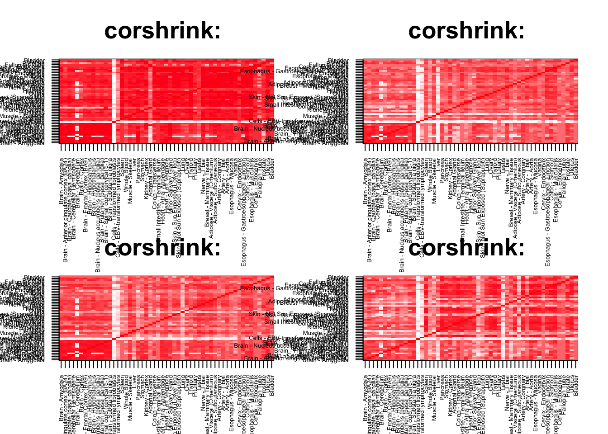
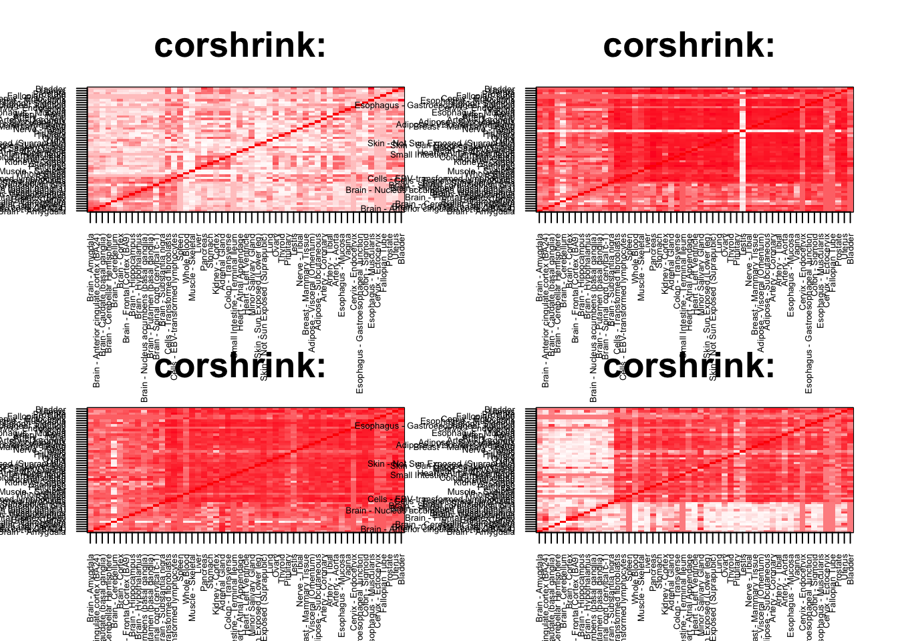
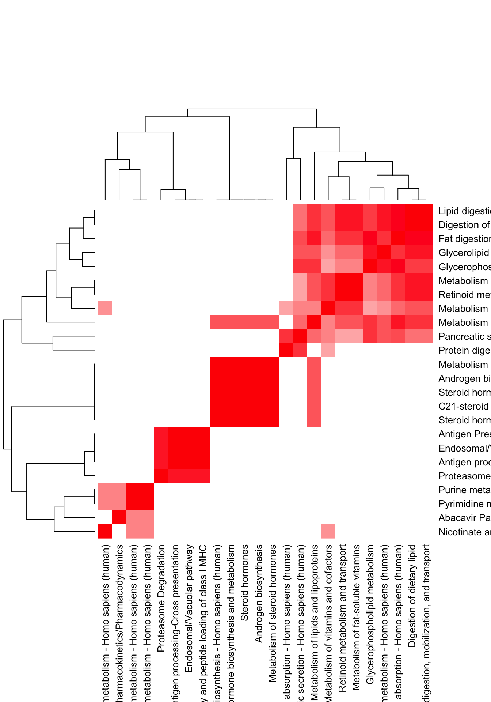
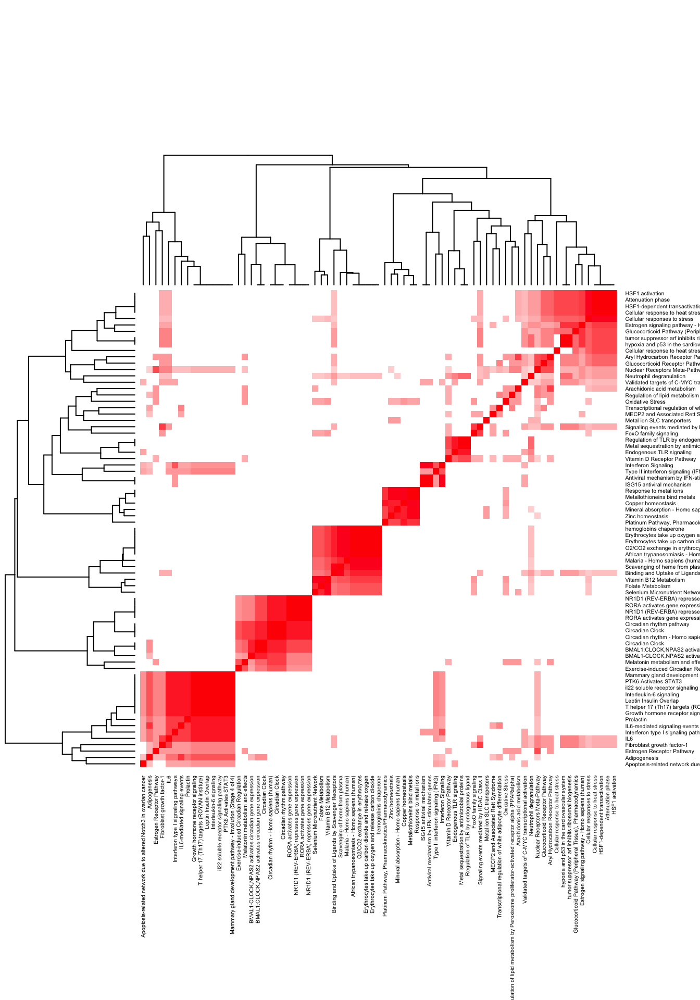

rm(list=ls())
corshrink_data <- get(load("../output/ash_cor_only_voom_pearson_halfuniform_gtex_tissues.rda"))
cor_data <- get(load("../output/cor_tissues_non_ash_voom_pearson.rda"))common_samples <- get(load("../output/common_samples.rda"))
tissue_labels <- read.table(file = "../data/GTEX_V6/samples_id.txt")[,3]
#library(data.table)
#data <- data.frame(fread("../data/GTEX_V6/cis_gene_expression.txt"))
#matdata <- t(data[,-c(1,2)])
gene_names <- as.character(read.table(file = "../data/GTEX_V6/gene_names_GTEX_V6.txt")[,1])
gene_names_1 <- as.character(sapply(gene_names, function(x) return(strsplit(x, "[.]")[[1]][1])))
U <- unique(tissue_labels)tab <- array(0, dim(corshrink_data)[3])
lymph_fibro_set <- match(c("Cells - EBV-transformed lymphocytes",
"Cells - Transformed fibroblasts"), U)
for(m in 1:dim(corshrink_data)[3]){
temp <- corshrink_data[lymph_fibro_set, - lymph_fibro_set, m]
temp1 <- corshrink_data[-lymph_fibro_set, -lymph_fibro_set, m]
tab[m] <- median(temp) - median(temp1[row(temp1) > col(temp1)])
}
ordering_high <- order(tab, decreasing = TRUE)[1:100]
ordering_low <- order(tab, decreasing = FALSE)[1:100]par(mfrow=c(2,2))
for(j in 1:4){
col=c(rev(rgb(seq(1,0,length=1000),1,seq(1,0,length=1000))),
rgb(1,seq(1,0,length=1000),seq(1,0,length=1000)))
image(as.matrix(corshrink_data[order_index,order_index, ordering_low[j]]),
col=col, main=paste0("corshrink: "), cex.main=2,
xaxt = "n", yaxt = "n", zlim=c(-1,1))
axis(1, at = seq(0, 1, length.out = 53), labels = U[order_index], las=2, cex.axis = 0.5)
axis(2, at = seq(0, 1, length.out = 53), labels = U[order_index], las=2, cex.axis = 0.5)
}
par(mfrow=c(2,2))
for(j in 1:4){
col=c(rev(rgb(seq(1,0,length=1000),1,seq(1,0,length=1000))),
rgb(1,seq(1,0,length=1000),seq(1,0,length=1000)))
image(as.matrix(corshrink_data[order_index,order_index, ordering_high[j]]),
col=col, main=paste0("corshrink: "), cex.main=2,
xaxt = "n", yaxt = "n", zlim=c(-1,1))
axis(1, at = seq(0, 1, length.out = 53), labels = U[order_index], las=2, cex.axis = 0.5)
axis(2, at = seq(0, 1, length.out = 53), labels = U[order_index], las=2, cex.axis = 0.5)
}
high_lymph_fibro_genes <- gene_names_1[ordering_high]
low_lymph_fibro_genes <- gene_names_1[ordering_low]
write.table(cbind.data.frame(high_lymph_fibro_genes), quote = FALSE, file = "../utilities/lymph_fibro/high_lymph_fibro.txt", row.names = FALSE, col.names = FALSE)
write.table(cbind.data.frame(low_lymph_fibro_genes), quote = FALSE, file = "../utilities/lymph_fibro/low_lymph_fibro.txt", row.names = FALSE, col.names = FALSE)tab <- read.delim("../utilities/lymph_fibro/pathway_high.tab")
head(cbind.data.frame(tab$pathway, tab$q.value), 10)## tab$pathway
## 1 Pancreatic secretion - Homo sapiens (human)
## 2 Fat digestion and absorption - Homo sapiens (human)
## 3 Digestion of dietary lipid
## 4 Androgen biosynthesis
## 5 Endosomal/Vacuolar pathway
## 6 Proteasome Degradation
## 7 Abacavir Pathway, Pharmacokinetics/Pharmacodynamics
## 8 Metabolism of vitamins and cofactors
## 9 Protein digestion and absorption - Homo sapiens (human)
## 10 Antigen Presentation: Folding, assembly and peptide loading of class I MHC
## tab$q.value
## 1 3.722020e-06
## 2 5.347168e-05
## 3 1.154111e-04
## 4 2.781559e-03
## 5 2.781559e-03
## 6 2.781559e-03
## 7 2.781559e-03
## 8 2.781559e-03
## 9 5.907292e-03
## 10 6.221906e-03pathway2 <- read.delim("../utilities/lymph_fibro/pathway_high.tab")
if(length(which(pathway2$q.value < 0.05)) > 2){
pathway2 <- pathway2[which(pathway2$q.value < 0.05),]
}
maxpath = 75
pathway <- pathway2[1:min(maxpath, dim(pathway2)[1]), ]
ensembl_genes <- pathway$members_input_overlap
pathway_list_genes <- sapply(ensembl_genes, function(x) return(strsplit(as.character(x), "; ")))
all_genes <- Reduce(union, pathway_list_genes)
pathway_mat <- matrix(0, length(pathway_list_genes), length(all_genes))
for(l in 1:dim(pathway_mat)[1]){
pathway_mat[l, match(pathway_list_genes[[l]], all_genes)] <- 1
}
pathway_bimat <- (pathway_mat)%*%t(pathway_mat)
pathway_bimat_prop <- diag(1/sqrt(diag(pathway_bimat)), dim(pathway_bimat)[1]) %*% pathway_bimat %*% diag(1/sqrt(diag(pathway_bimat)), dim(pathway_bimat)[1])
col=c(rev(rgb(seq(1,0,length=1000),1,seq(1,0,length=1000))),
rgb(1,seq(1,0,length=1000),seq(1,0,length=1000)))
heatmap(pathway_bimat_prop, labRow = pathway$pathway, labCol = pathway$pathway, cexRow = 1, cexCol = 1, col = col, zlim = c(-1,1),
scale = "none", margins = c(5, 5))
tab <- read.delim("../utilities/lymph_fibro/GO_high.tab")
head(cbind.data.frame(tab$term_name, tab$q.value), 10)## tab$term_name tab$q.value
## 1 digestion 0.0001972115
## 2 lipid digestion 0.0035346582
## 3 extracellular space 0.0063843488
## 4 positive regulation of hormone metabolic process 0.0184803744
## 5 MHC class I protein complex 0.0025037228
## 6 phosphotransferase activity, nitrogenous group as acceptor 0.0073324071
## 7 cellular response to gonadotropin stimulus 0.0184803744
## 8 triglyceride lipase activity 0.0094852662
## 9 cobalamin metabolic process 0.0565298395
## 10 water-soluble vitamin metabolic process 0.0250271070tab <- read.delim("../utilities/lymph_fibro/pathway_low.tab")
head(cbind.data.frame(tab$pathway, tab$q.value), 10)## tab$pathway tab$q.value
## 1 BMAL1:CLOCK,NPAS2 activates circadian gene expression 1.119423e-05
## 2 Metallothioneins bind metals 2.950066e-05
## 3 Response to metal ions 2.950066e-05
## 4 Scavenging of heme from plasma 2.950066e-05
## 5 Attenuation phase 2.950066e-05
## 6 HSF1 activation 3.485203e-05
## 7 Circadian Clock 5.798649e-05
## 8 HSF1-dependent transactivation 5.798649e-05
## 9 Zinc homeostasis 5.798649e-05
## 10 Binding and Uptake of Ligands by Scavenger Receptors 7.770201e-05pathway2 <- read.delim("../utilities/lymph_fibro/pathway_low.tab")
if(length(which(pathway2$q.value < 0.05)) > 2){
pathway2 <- pathway2[which(pathway2$q.value < 0.05),]
}
maxpath = 75
pathway <- pathway2[1:min(maxpath, dim(pathway2)[1]), ]
ensembl_genes <- pathway$members_input_overlap
pathway_list_genes <- sapply(ensembl_genes, function(x) return(strsplit(as.character(x), "; ")))
all_genes <- Reduce(union, pathway_list_genes)
pathway_mat <- matrix(0, length(pathway_list_genes), length(all_genes))
for(l in 1:dim(pathway_mat)[1]){
pathway_mat[l, match(pathway_list_genes[[l]], all_genes)] <- 1
}
pathway_bimat <- (pathway_mat)%*%t(pathway_mat)
pathway_bimat_prop <- diag(1/sqrt(diag(pathway_bimat)), dim(pathway_bimat)[1]) %*% pathway_bimat %*% diag(1/sqrt(diag(pathway_bimat)), dim(pathway_bimat)[1])
col=c(rev(rgb(seq(1,0,length=1000),1,seq(1,0,length=1000))),
rgb(1,seq(1,0,length=1000),seq(1,0,length=1000)))
heatmap(pathway_bimat_prop, labRow = pathway$pathway, labCol = pathway$pathway, cexRow = 0.4, cexCol = 0.4, col = col, zlim = c(-1,1),
scale = "none", margins = c(5, 5))
tab <- read.delim("../utilities/lymph_fibro/GO_low.tab")
head(cbind.data.frame(tab$term_name, tab$q.value), 10)## tab$term_name tab$q.value
## 1 response to stress 2.361739e-12
## 2 response to chemical 5.607048e-11
## 3 response to biotic stimulus 1.014773e-09
## 4 response to organic substance 1.634700e-08
## 5 response to external biotic stimulus 1.634700e-08
## 6 response to other organism 2.977012e-08
## 7 regulation of response to stress 2.977012e-08
## 8 cellular response to chemical stimulus 1.634700e-08
## 9 response to temperature stimulus 3.218993e-07
## 10 defense response 9.283560e-07This R Markdown site was created with workflowr